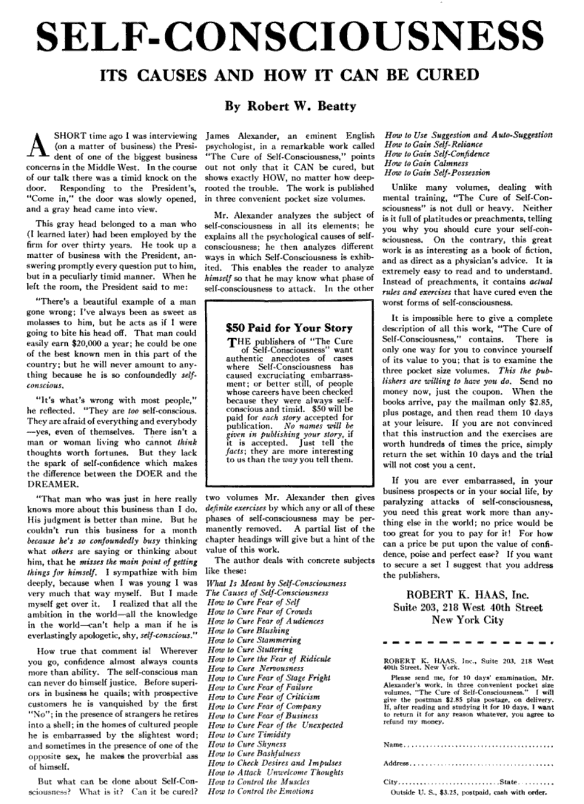

Types of Little Leather Library Books
Here is a simplified categorization of the different types of Little Leather Library/Little Luxart Library/Robert K. Haas books published. They are all roughly 4" x 3.25" unless otherwise noted. Further distinctions can be made among these types, click on the links below for that information and photos as well. From reading the advertisements, the term "Redcroft" seems to just describe the non-leather covers, they also sometimes used "Croftcutt" to describe them. Some of the edition breakdowns come from the now defunct website UnEarthlyBooks.com that I accessed through internet archives, and I'm unable to confirm the existence of certain types. Some books have title lists in the back, some do not. If you have any additional photos or information, please contact us.
- Literary Classics
- Real Leather
- Miniature Library
- Redcroft Edition
- Brown
- Little Luxart Library
Real Leather (First editions)
1916-1919. It is believed that covers with blind stamped titles were sold before the ones with floral borders. There were intially 15 titles. Various leathers used. Floral bordered tan leather sets could be purchased to send to soldiers oversees fighting in WW1. At some point, "The Jew" was replaced with "Mumu", making this title rare among these, along with Constitution of the League of Nations that is also a rare find.
- Main Types
- Tan with Floral Borders (90 volumes)
- Colored with Floral Borders (60 volumes)
- Tan with Blind Stamp
- Colored with Blind Stamp
- Tan (Suede) with Blind Stamp
- Colored (Suede) with Blind Stamp (60 volumes each color)
- Rumoured / Other Types
- Wraps version: Proof (I have only run across one of these)
- Wraps Version 2: Proof (these are larger)
- Hard Cover: Proof (Stiff card board boards)
- Black leather with blind stamp title (full page Witman's Sampler Candy Ad on last page)


Real Leather Collections
No collections yet!
Redcroft Editions
1921-1924. Embossed leatherette with "Redcroft Edition" on the back covers. Most common among all editions.
- Redcroft Editions
- Red embossed leatherette (101 Volumes)
- Version 1: Green Leatherette (101 Volumes)
- Version 2: Deluxe Green/Bronze tinted Leatherette (101 Volumes)
- Version 3: Deluxe Bronze with Turquoise Wash (101 Volumes)
- Version 4: Bowman Hotels Edition (101 Volumes)
- Version 5: Gilt Title on Spine (101 Volumes)

Redcroft Collections
No collections yet!
Little Luxart Library
1921-1925. Published by Robert K Haas after he took over ownership of the company. A Christmas Carol seems to be the rarest title among the red Little Luxart Library books, not sold in purchasable sets of 30.
- Little Luxart Library Editions
- Red leatherette transitional (first thus) cover is luxart but credited published on title page is Little Leather Library.
- Red Leatherette (aka Little Luxart Library) (31 Volumes)
- Brown Glossy Leatherette Version (30 Volumes) (?)
Redcroft Collections
No collections yet!
Miniature Library
1920-1921. First leatherette books, due to rising leather prices during WW1. There is slight variation among these, in both size, shade of red, and stamp color. Tom Fox goes into some of the differences in his identification guide. A set of 30 sold for $2.98, or $49 in today's money.
- Miniature Library Editions
- Red Miniature Library Edition with Dark Brown Blind Stamp (60? Volumes)
- Red Miniature Library Edition with Gold Blind Stamp (101 Volumes)
Miniature Library Collections
No collections yet!
Brown Leatherette
1920's. A Christmas Carol by Charles Dickens seems to be the most printed title among these, which unlike the others has a few advertisements in the back for different purchasable sets, as well as the Redcroft Edition stamp on the back cover.
- Brown Leatherette Editions
- Version 1: Matte Finish (101 Volumes)
- Version 2: Glossy Finish (101 Volumes) (30 volume set in D.F. Duncan cedar chest could be purchased)
- Photos
-
Glossy (top) Matte (bottom)
Brown Leatherette Collections
No collections yet!
Extracts of Proceedings Grand Lodge F&A.M. New York
1922-1923. This book was a special printing for the Grand Lodge much like the Sidewalks of New York. Very rare.
- Extracts of Proceedings... Editions
- 1922
- 1923
- Photos
Sidewalks of New York
1923. Illustrated. These were given to guests of Bowman Hotels in NYC, boasting everything to appreciate about visiting New York, from it's history, sights, people and culture.
- Photos
The Holy Bible
1924. 30 volume set that could be purchased with "The Ten Commandment Bookends" costing an extra 69 cents which resemble the tablets where Moses wrote The Ten Commandments, other sets could come in a cedar chest.
- Bible Editions
- Matte Brown Covers (30 Volumes)
- Glossy brown covers ( 30 volumes)
- Deep Bronze with Dark Brown Wash similar to Deluxe Redcroft Editions (30 Volumes) (could be purchased with D.F. Duncan cedar chest)
- Titles
Old Testament:
I: The First Book Of Moses Called Genesis
II: Vol. II The First Book Of Moses Called Genesis
(continued) III: Exodus IV: Leviticus & Numbers
V: Numbers (con't)
VI: Deuteronomy & Joshua
VII: Joshua & Judges
VIII: Judges (continued), Ruth
IX: Samuel
X: Samuel I & II
XI: The First Book of Kings
XII: Kings I & II
XIII: Chronicles I & II
XIV: Chronicles (con't) XV: Ezra & Nehemiah & Esther
XVI: Job
XVII: Psalms
XVIII: Psalms (con't) & Proverbs
XIX: Ecclesiastes, Solomon & Isaiah
XX: Jeremiah
XXI: Lamentations of Jeremiah & the Book of the Prophet Ezekiel ( con't)
XXII: Daniel; MalachiNew Testament:
XXIV: St. Mark
XXV: St. Luke
XXVI: St. John
XXVII: Acts of the Apostles
XXVIII: The Epistle of Paul, the Apostle to the Romans
XXIX: Holy Scriptures of the Old Testament
XXX: Peter & Revelation

{kind=link}
{kind=link}
{kind=link}
The Holy Bible Collections
No collections yet!
Child Health Library
1924. Robert K Haas, Inc. Formerly Little Leather Library. 10 volume set, covered in either brown or light sea green with a darker green wash, embossed leatherette. "A series of ten books by practising specialists of the highest standing, giving the latest and most authoritative information on every phase of child health". Very rare.
- Child Health Library Editions
- Green Child Health Set (10 Volumes) (could be purchased in beautifully illustrated gift box)
- Brown Child Health Set (10 Volumes)
- Titles
-
I. Pre-Natal Care and the Baby's Birth
II. Babies - Their Feeding and Care
III. The Neglected Age - The Child from Two to Six
IV. Dangers of the School Age
V. Communicable Diseases of Childhood
VI. Hygiene of the Mouth and Teeth
VII. What Children of Various Ages Should Eat
VIII. How Children Ought to Grow
IX. Psychology of the Child
X. Educational Problems
- Photos
Child Health Library Collections
No collections yet!
The Cure of Self Consciousness by James Alexander
1924. Robert K Haas Inc, Formerly Little Leather Library. A 3-volume set dealing with self-consciousness. Brown flexible leatherette embossed covers. Just under 5" by 7". The second photo is a full-page advertisement I found in The American Legion Weekly from January 2nd, 1925.
- Photos
-
